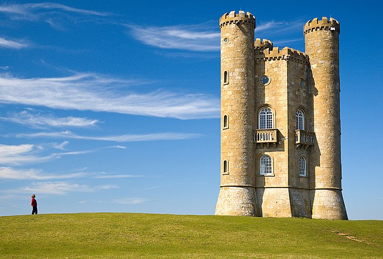
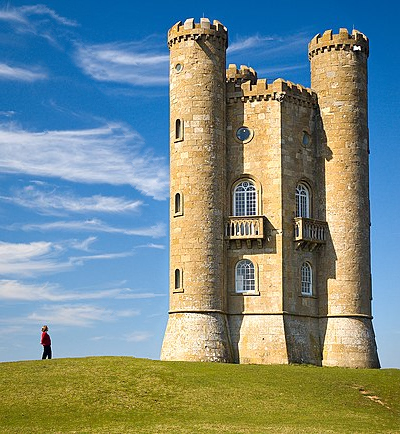
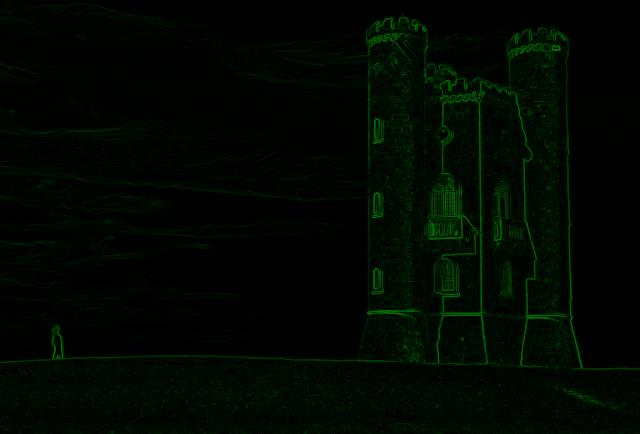
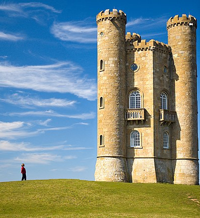
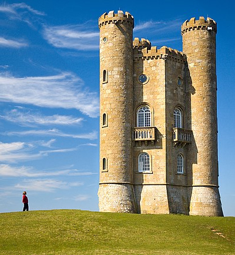
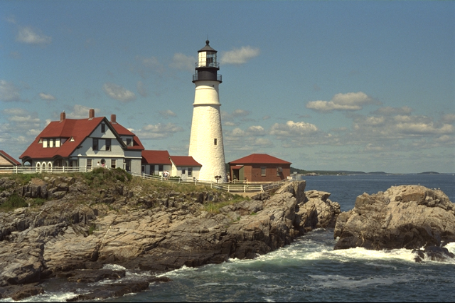
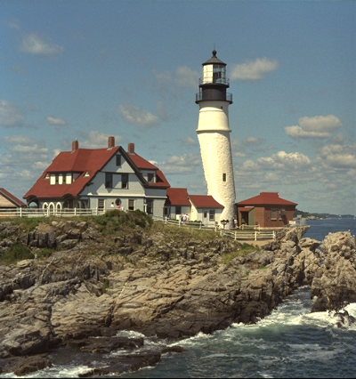
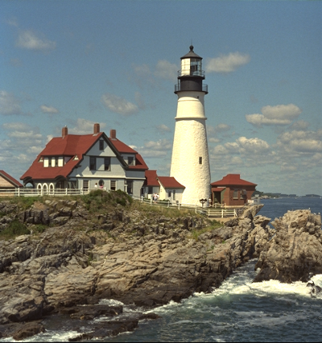

Seam carving
MIT’s Introduction to Computational Thinking has to be one of the best prepared courses ever and it’s fun to go through. If you studied computer science you’ll know most of the topics but some lectures are just a delight to watch especially due to used visualisations, for example lectures on multigrid methods, floating-point numbers, or discrete Fourier transform.
One technique I did not know before is seam carving. Let’s say you have a picture of Broadway tower.
{kind=link}

But it’s 640 pixels wide and you only have 400 pixels of space. Cropping would remove either a part of the tower or the person, both prominent parts of the image. Scaling would distort the image. But you can use seam carving, to cut out unimportant pixels from the picture, while mostly maintaining continuity:

The Algorithm
The process is well explained on Wikipedia with this very picture and I shouldn’t show the source code since it’s a homework in the mentioned course but in short:
- Define a metric, energy, for how important a pixel is to the image,
- calculate the shortest (w.r.t. energy) vertical path, seam, which in each of its steps goes to a nearby pixel in the row below,
- cut this seam out,
- go to step 2 if your image is still too big.
This works for reducing width. In case you’re reducing height you’ll be finding horizontal paths.
Implementation is fairly straightforward. Cutting seams out can be done by just removing their pixels from the image, and calculating the seam that’s given by the shortest path is a small exercise in dynamic programming.
The space for creativity is in defining the metric, let’s start with the energy function provided by Computational Thinking course, edge detection using Sobel filter.
brightness(c::RGB) = mean((c.r, c.g, c.b))
function energy(img)
∇y = convolve(brightness.(img), Kernel.sobel()[1])
∇x = convolve(brightness.(img), Kernel.sobel()[2])
sqrt.(∇x.^2 .+ ∇y.^2)
endThis approach is very robust but we’ll see we can improve results by tailoring a metric for a given image. Here we see its effect on our tower, greener means more energy.

Let’s see how it works for seam carving.
Broadway Tower Energy

The cuts at the bottom edges of the tower are quite unpleasant. But we can change our metric! Let’s add importance to dark pixels to fix the bottom right edge.
dark_relu(c::RGB) = max(0, (1.0 - brightness(c)) - 0.63)
# 0.63 found by a few experiments
energy_darkness(img) =
min.(1, energy(img) .+ dark_relu.(img))
The fix has worked for the intended area but made the left side even worse. The beige in the bottom left of the tower doesn’t create as strong edges as clouds.
Let’s try taking a few of the tower’s pixels, calculate the mean colour, and in our metric assign high values to pixels close to this colour.
beige_cutout = img[340:360, 365:375]
beige = mean(beige_cutout)
beigness(c::RGB) =
(c.r - beige.r)^2 + (c.g - beige.g)^2 + (c.b - beige.b)^2 < 0.2^2
? 0.6 : 0.0
energy_beigness(img) =
min.(1, energy(img) .+ dark_relu.(img) .+ beigness.(img))Splendid! This is how it got there:

Lighthouse Energy
Let’s try another picture, lighthouse from Julia’s TestImages.

First, just with energy decided by edge detection.

That’s an ugly cut in the lighthouse. An obvious idea is to consider bright pixels as more energetic, and it works out well. The building to the right from the lighthouse suffered this time but it’s less noticeable and we even get more sea!

bright_relu(c::RGB) = max.(0, brightness(c) .- 0.8)
energy_brightness(img) = min.(1, energy(img) .+ bright_relu.(img))